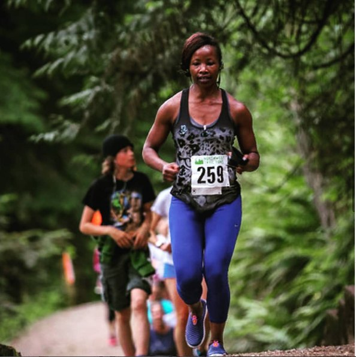

I know what precision looks like. Real life is not a bodybuilding stage.
I am Betty. I teach women to understand their food, so the next choice is obvious and the progress keeps going after I am out of the picture.

It started with yoga in Kenya, at eighteen.
I found health and fitness young. After finishing high school in Kenya I began teaching yoga classes under the mentorship of Mrs Kanja, who was the first person to sit me down and teach me about eating well.
After I moved to the States I trained under several coaches as I prepared for bodybuilding competitions. That is where precision nutrition stopped being a theory for me. I learned what food actually does: how varieties and amounts can be adjusted to reach a specific goal in a specific body.
I competed. I once placed first. What stayed with me was not the trophy. It was realizing how much of what I had been taught about food before that point was noise.
What stayed with me was not the trophy.
My body stopped responding the way it used to.
As I got older I started noticing it. I could work hard, eat what I thought was healthy, and still struggle with stubborn belly fat and clothes that did not fit the way I wanted them to. It was frustrating, because I felt like I was doing everything right.
The biggest problem was not a lack of effort. It was confusion.
Should I avoid carbs? Should I fast? Should I eat more protein? How much is too much? Is something labeled “healthy” actually helping me reach my goal?
So I went back to the fundamentals: nutrition, portions, consistency, and genuinely understanding what I was putting into my body. That changed everything for me, and it made one thing very clear. I did not want women to believe their only remaining option was another extreme diet or hours they do not have in a gym.
That is why I coach.

Clarity that leads to progress you keep.
Most of this market says follow the plan. I would rather you understand the choice. A printed plan works right up until the day you eat something that is not on it.
So I teach women to understand food portions. To read a label. To know what a serving actually looks like on their own plate, instead of jumping from one trend to the next and hoping.
The goal is to leave you more capable than when you arrived. Not more dependent on me.
Knowledge made practical.
Where the knowledge came from, and what it lets me shortcut for you.
- Foundation
- I began teaching yoga in Kenya at eighteen, guided by Mrs Kanja, who was the first person to sit me down and teach me about eating well.
- Discipline
- Preparing for bodybuilding competitions sharpened my nutrition precision to the point where every gram was accounted for.
- Lived empathy
- I understand stubborn belly fat and a body that stops responding the way it used to, because mine did.
- Scope
- Nutrition coaching and education. I do not diagnose or treat, I am not a replacement for your doctor, and I will say so out loud when something belongs with them.
The knowledgeable friend.
Warm. I understand the mirror, the frustration and the fear. Plain-spoken. Science becomes language you can repeat to someone else. Unshockable. No judgment about failed diets, setbacks or starting over. Steady. Calm confidence, with no hype and no urgency theater.
Expert enough to be trusted. Human enough to be told the truth.
I have stood on that stage.
I competed in bodybuilding and I once placed first. Not because the trophy matters to you, but because that is where I learned exactly what food does to a body, and how precisely it can be adjusted.



You will never be asked to train like this. That is not the point and it is not the program. The point is that I learned nutrition at the level where every gram counted, so I can tell you which parts genuinely matter in a normal week and which parts you can stop worrying about.
I do not just teach this. I live it.
I work with women who have tried diets, supplements and weight-loss trends but still struggle with stubborn weight and belly fat. Over 16 weeks, I help them lose weight sustainably, fit into their clothes again, and feel confident in their bodies.
Beatrice “Betty” Mwihaki Igeria
Free guide
The label-reading guide for real life
Serving size, protein, added sugar. Three numbers, in that order, and you can judge almost any packet in the aisle. This is the short, plain-English guide I wish every woman had before she started another diet.
Email me and I will send it straight back.
Three numbers, in that order.
Let us talk about your week.
A free 20-minute conversation. No pressure and no pitch you have to sit through.